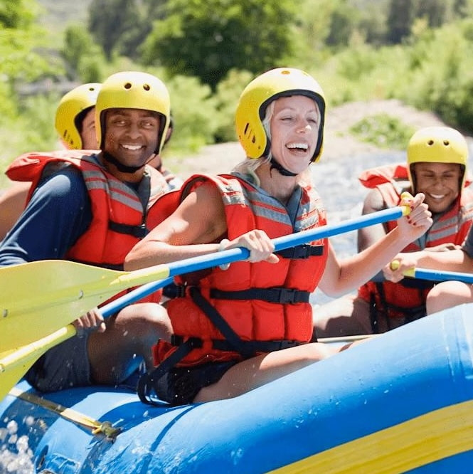

Rapids wasn’t founded in a boardroom; it was born in the middle of a Class IV swell. What started as a group of friends chasing the perfect line turned into a mission: to share the raw, unbridled energy of the river with anyone brave enough to pick up a paddle. At Rapids, we believe the river has a way of washing away the everyday and replacing it with something legendary.